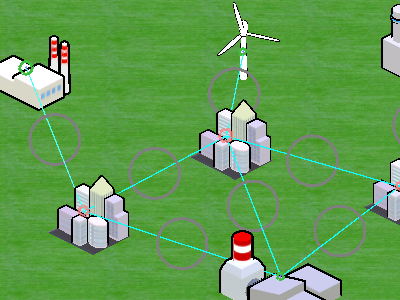
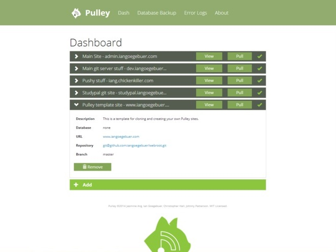
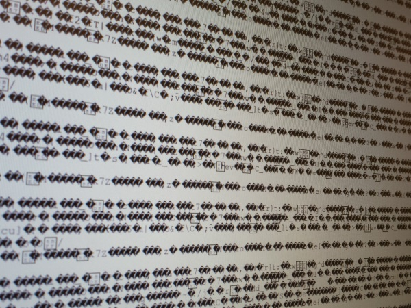
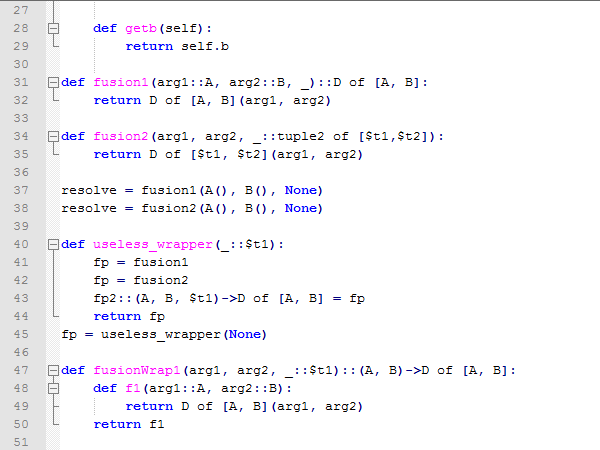
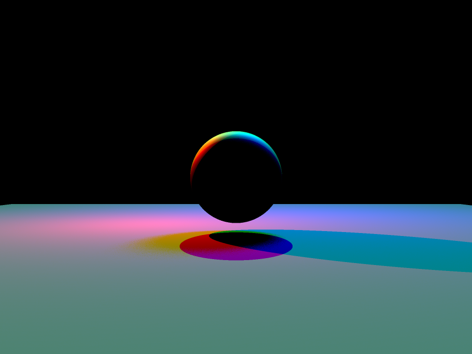

Projects
This is a list of interesting projects that I have worked on, in and out of school. Each description details the technical challenges of the project and the skills I gained from each one.
Griddle - Educational game about the power grid
Skills: Unity3D, C#, Agile development
Collaborators: Michael Cohen leads the project, I was one of many students working on it
Description: Griddle is an in-development educational game by Michael Cohen which will be used to educate high-school and college students about how the power grid works, and about the challenges and benefits of renewable vs. conventional energy. It covers concepts from system design to generation scheduling, all the way down to responding to day-to-day challenges and crises. I worked on this project for about 8 hours a week for 3 semesters, and part-time during the summer of 2014. The game has been used to teach several lessons at Berkeley High School.
Most of the code I worked on was either on the power grid simulation engine or on the user interface and controls. I now have significant experience with the Unity editor, and in particular the new GUI layout system they introduced in 2014. The team used a mostly Agile development process of two-week sprints and a weekly meeting to check progress and/or plan the next sprint. I was one of at least three programmers on the project at any given time, so I learned a lot about writing maintainable/readable code, giving and receiving feedback, and being communicative about my progress.
Pulley - Deployment system for websites on Git
Skills: HTML5/CSS/JQuery, Bootstrap, PHP
Collaborators: Ian Goegebuer, Johnny Patterson, Jasmine Ang
Description: Pulley is a website admin tool intended for use with sites that are written using Git source control. It allows a site owner to deploy websites from a Git repositiories onto a live server by clicking one button. The dashboard page shows the name and URL of each of the sites, and indicates whether the version running on the server is up-to-date with the code in the repositories. The system also allows you to snapshot a MySQL database running on the server and save it to a Git repository for backup. This project won two awards at HackUCI 2014. It is too rough around the edges to have an open-source distribution at the moment.
This project started with a very concise idea and the team didn't add many new features during development, so that by the end of the hackathon we had a very polished and useable product. I'm proud of what we made, and I learned a lot of PHP and frontend web programming along the way.
3-Stage RISC-V CPU on Xilinx FPGA (school project)
Skills: Verilog, Xilinx toolchain
Collaborator: Corbin Halliwill
Description: In the UC Berkeley class called "Components and Design Techniques for Digital Systems" (Computer Science 150) students designed a CPU with a 3-stage pipeline and implemented it in Verilog on a Xilinx FPGA. The biggest challenge of the project was debugging small logic errors and timing problems, and as a result I gained a lot of experience with the Xilinx simulation and analysis tools and the ChipScope FPGA debugging tool. The thumbnail shows what happens when you mess up your UART transmitter block!
Python Compiler (school project)
Skills: C++, regular expressions
Collaborators: Jeffrey Seyfried, Shaun Singh, Aaron Zhou
Description: The "Programming Languages and Compilers" class at UC Berkeley (Computer Science 164) teaches students to build a compiler for a reduced and static-typed dialect of Python. In the first of three projects, students create a lexer and parser to build abstract syntax trees from Python source. The second project is a type inferrer, which decorates the syntax trees with type information and then infers the static types of expressions that are not specified. The third project is a code generator, in which the final type-inferred syntax tree is converted into C++ source and compiled with GCC to create an executable.
Raytracer (school project)
Skills: C++
Description: The introductory computer graphics course at UC Berkeley (Computer Science 184) has a few projects which explore different aspects of rendered 3D graphics. One of the projects is a raytracer, which produced the image on the left. A raytracer simulates reflections and shadows by casting rays from a camera into a 3D scene and calculating the color of each pixel based on what objects the rays hit, whether they are illuminated by a light source, whether they have a reflection of another object, etc. All of these qualities are calculated by casting rays in the scene and testing intersections with the polygons in the scene. My implementation featured reflections, shadows, anti-aliasing of pixels through multi-sampling, and area lights / soft shadows through Monte Carlo sampling. In other words a lot a lot a lot of vector and matrix operations.